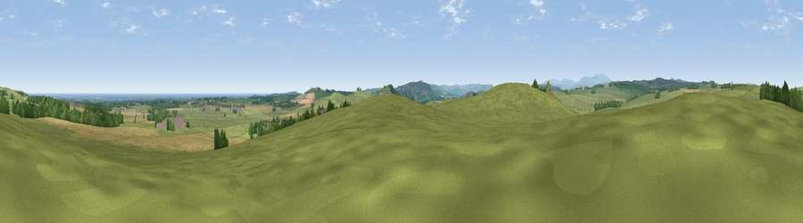

Viewpoint near Eglingham
#8578 in England · top 36% of its area beats it · near Eglingham · access?Where it is
The exact computed spot (NU 15800 20675). Click the marker for map links.
Public access: no public right of way or access land is recorded at this exact spot — it may be on private land. Computed from Natural England's CRoW access layer and OpenStreetMap rights of way — not the legal definitive map. Always verify locally.
The view, rendered

A 360° render of this exact spot computed from the terrain model, tree cover and land cover — summer colours, afternoon light, calibrated against photographs of famous viewpoints. Real trees, hedges and buildings will differ in detail.
The panorama
Grey silhouette: terrain skyline in each direction (720 bearings, Earth curvature and refraction included). Dashed green: skyline with trees (+15 m) and buildings (+8 m) as obstacles. Blue strip: how far the ground is visible on each bearing.
Where the view opens
Wedge length = distance to the farthest visible ground on that bearing (vegetation-aware). Rings at 10, 25 and 50 km.
What fills the view
63% grassland · 24% cropland · 9% woodland · 4% water ·
Angular shares of the visible panorama (visual magnitude), not map area. Landscape diversity 0.44 (0–1 Shannon).
Key numbers
More beautiful places nearby
The staircase of upgrades: each row has a higher view potential than everything closer. Driving times are estimates from straight-line distance, calibrated against real road routing — check an actual route before setting out.
| Place | Direction | Drive | Score |
|---|---|---|---|
| Viewpoint near Ellingham | N · 2 km | ~5 min | 70.9 |
| Viewpoint near Alnwick | S · 3 km | ~7 min | 73.9 |
| Viewpoint near Ellingham | N · 3 km | ~8 min | 74.2 |
| Viewpoint near Bolton | SSW · 7 km | ~14 min | 77.5 |
| Viewpoint near Alnwick | S · 7 km | ~14 min | 77.7 |
| Cloudy Crags | S · 7 km | ~14 min | 80.2 |
| Viewpoint near Chillingham | WNW · 8 km | ~16 min | 81.8 |
| Viewpoint near Eglingham | W · 8 km | ~17 min | 83.8 |
55.47964, -1.75157 · source: screening · position refined by local search. Computed location — check access rights before visiting.